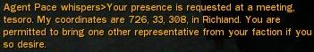
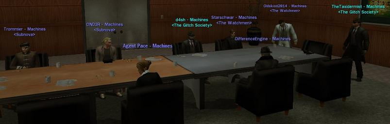
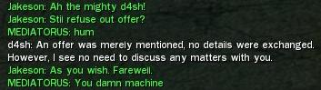

MxO Archive Databanks
Communications intercept. Transmission detected Tue 22nd of Apr 2008 at 08:24 AM by RockyB. Communique follows:
Below is all the survillence data for the second week of The Glitch Societys operations. At this time the dataset is complete.
A Missive from Agent Gray
I must commend your highly efficient work, operative. This intelligence is most...enlightening. We await your next report.
Efficiently,
Agent Gray
Week two Report
1/27/06 23:00 GMT: Faction leader d4sh recieves a private message from Agent Pace

1/27/06 23:00 GMT: Faction Leader d4sh immediatly summons the nearest operative "TheTaxisdermist". The two move to the requested co-ordinates
1/27/06 23:05 GMT: Representatives from several machine factions are present at the impromptu meeting

1/27/06 23:05 GMT: The minutes of the meeting are logged by "TheTaxidermist". These are avaliable elsewhere in this repository.
1/27/06 23:20 GMT: Faction leader d4sh reports running into the false commando "Jakeson" and his lacky "MEDIATORUS" outside the area

1/27/06 23:30 GMT: Faction leader d4sh reports that operative "CIND3R", unaffiliated with The Glitch Society, ased for a private meeting. D4sh acquiesed and CIND3R provided the following information:
Good Eveining D4sh. Attached is my current info and intel on the commandos we have met.
Our first encounter was with an operative named ColKurtz at teh tabor west hardline. It was mere luck that we stumbled on him. He was knowlegeable fo the literature for which is his namesake. Every question that was asked of him - whether Zion, Merovingian, or Machine was met with a "That's Classified" Statement.
However, his mission was to gather intel for the commander and asked several questions of us:
The main information he was interested in:
How do we feel about the truce.
How do we feel now that the general has made his presence known in the matrix
What do we know of the cypherites - what are their weaknesses - where do they hold up?
Thats about all I can remember at the moment. I look foward to seeing the
rest of the agent gray information.
Thanks !
CIND3R
Subnova - Captain of the Outer Rim Nebula hvcft
1/28/06 2:00 GMT: A message is recieved from Agent Gray:
May I ask, what conclusion do you draw regarding the commandos on which you have been unable to obtain any data? Are they believed to be conducting training operations? Have you heard any rumors from other redpills concerning their location?
1/28/06 2:05 GMT: Faction leader d4sh starts further investigation into the 'missing' commandos
1/28/06 2:30 GMT: Important information is recieved from "Starschwar". Jakeson contacted him and asked him to initiate operations against us. It appears Starschwar accepted, however the fact that he has also forwarded the messages to us is an indication that his acceptance was a ruse. The most important elements have been highlighted:
Army of Belief Matrix Expeditionary Forces
Section 13
Company 2
Greetings brother. We are contacting you in order to accomplish several things. First is our thanks to you for your support for our cause. We greatly appreciate this. Secondly is to inform you of a task we would like to have you do, if possible.
You might have seen Targetor. He is one of the new recruits and does fairly well while on duty. However, he seems rather incapable of achieving long term investigations. His last assignment was to discover the location of The Glitch Society’s headquarters. He searched for quite some time but uncovered little. He was removed from his position and placed in my company. We would like to have you complete his assignment. The Glitch Society is a strong faction with ties to Agents and Machines. We wish to learn more about them by infiltrating their headquarters. We cannot do this without a location. If you choose to accept this assignment we would be most pleased.
Although his efforts may seemed futile he did find some very interesting things:
We know their HQ is Downtown and possibly in the Lamar District
We know each captain has an office
We know it is on the third of fourth floor of a building
We know the building is near a hardline
If you wish to not accept this assignment then contact me and I shall reassign it. We are trusting you to keep this information private.
Captain Jakeson
Army of Belief Scout Division
###
...
We thank you for accepting this assignment brother. We are still looking into our data files to see if any photographs are known to exist. We do know that it is downtown and it is in Lamar. The information you have provided has been invaluable brother. If we do discover their HQ would you be interested in joining me and my men for a probing expedition?
1/28/06 3:30 GMT: Operative "RockyB" expresses concern about Starschwar's motivation. It appears that at one point Starschwar was working for Jakeson, and indeed still may be. RockyB asks that investigations be started into Starschwars recent behaviour.
1/28/06 8:00 GMT:External Data Sources confirm meeting
1/28/06 21:30 GMT: Operative "RockyB" reports contact with an unknown redpill trying to find out more about The Glitch Societies involvement with Agent Gray
Dibbuk whispers>i was just wondering do you know what happened at Agent Grays Meeting? its just that i am a Machinist and its a shame i was never there, especially since it could have been orders from our masters
whisper to Dibbuk>Sorry, I honestly have no idea. If you find out any information through your enquires be sure to sent it on to my faction leader, d4sh, though. He's very interested in finding out himself.
Dibbuk whispers>ok cool, *sighs* amazes me that not even fellow Machnists are told these things